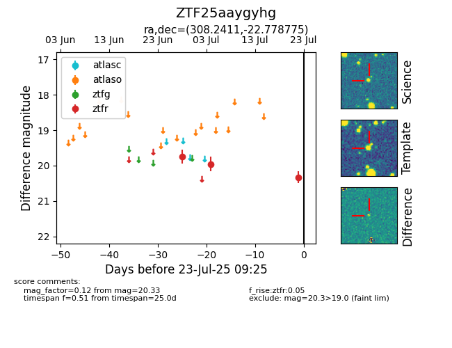

Target ZTF25aaygyhg at 2025-07-23 11:48, see:
FINK: fink-portal.org/ZTF25aaygyhg
Lasair: lasair-ztf.lsst.ac.uk/objects/ZTF25aaygyhg
ALeRCE: alerce.online/object/ZTF25aaygyhg
alt names
ZTF25aaygyhg (ztf,fink)
coordinates:
equatorial (ra, dec) = (308.2411,-22.77878)
galactic (l, b) = (21.7697,-31.88935)
photometry
last ztfr=20.33
3 ztfr detections
